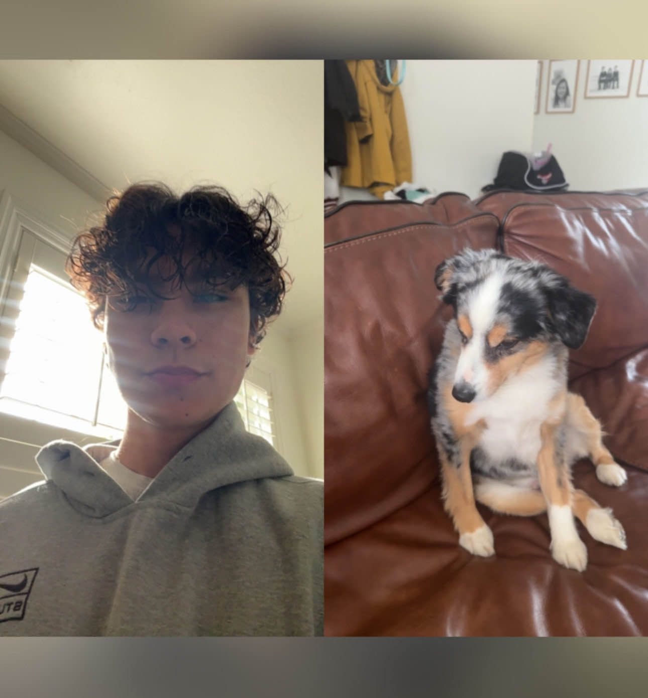

About Me
Name: Cole Dalton
Major: Economics/Accounting
Interests: I am interested in things like hiking, traveling, and computers. I also like listening to music.
What I do for fun: I like to hangout with friends, play video games, and take my dogs for long walks.